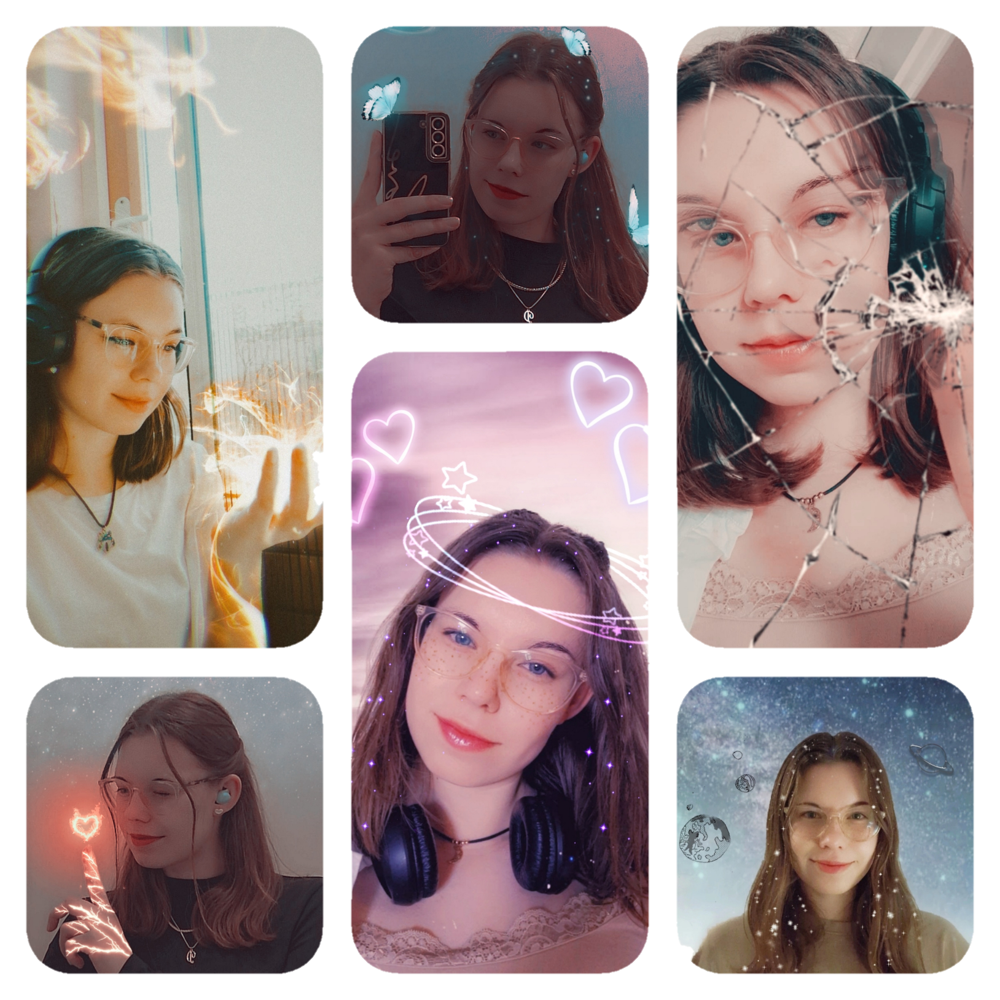

Hallo! Ik ben Destiny van der Veer, een enthousiaste student die
de overstap maakt van Sport & Beweging naar de wereld van
programmeren.
Na het succesvol afronden van niveau 2 en 3 op het Albeda College
in Sport & Beweging, heb ik mijn passie voor technologie ontdekt.
Momenteel verdiep ik me in HTML, CSS, JavaScript en Python.
Naast coderen ben ik een kunstschaatser en hou ik van foto's bewerken,
wandelen en klimmen. Deze sporten hebben me discipline en
doorzettingsvermogen bijgebracht - eigenschappen die ook in
programmeren van pas komen!
Volgend jaar start ik mijn nieuwe avontuur bij het GLR om mij
verder te ontwikkelen als developer.